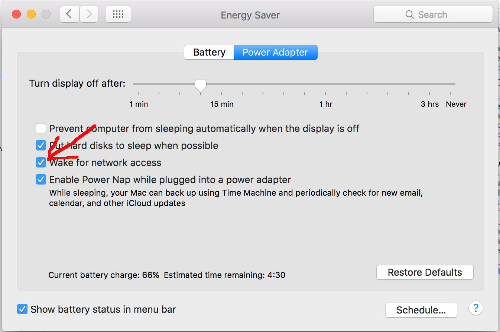

Wake On Lan
Wake-on-LAN (WOL) allows a computer to be turned on or woken up by a network message. Only restriction is the computer must be connected to the network with a cable. WIFI cannot be used.
Enable a Mac OS X computer to be woken up
In the 'System Preferences', select 'Energy Saver' , and check the 'Wake for network access'

It is not possible to wake up computers connected via WIFI (airport) only. Only if the mac is connected with an Ethernet cable. This is not a limit of WOL, but WIFI cards does not support the WOL protocol.
Enable a Windows 7 computer to be woken up
- Open Network and Sharing Center (click the Start button, type Network and Sharing in the Start Search box, and press Enter).
- Click the Change adapter settings link in the upper left of the navigation pane.
- Right click the network connection you want to enable/disable power management support on and click Properties.
- Click Configure.
- On the Power Management tab, check or clear the Allow the computer to turn off this device to save power check box. When checked, power management is enabled on the network adapter.
- Enable all 3 options as shown below.


Enable a Windows XP computer to be woken up
- Start - Settings - Control Panel - System
- Hardware tab, device manager
- From the list of hardware devices, click on network adapters, and the network adapter for the Ethernet card (not WIFI)
- Select advanced tab
- select Wake from shutdown to on
- select Wake on LAN capabilities to Magic Packet


Enable a Linux computer to be woken up
- Edit connections - Select connection - choose edit
- On Connection screen choose Ethernet - in row Wake up on Lan check to Magic
- After click save to save your setting